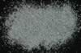

|
|
(For further information on spectroscopy, see:
http://speclab.cr.usgs.gov)
TITLE: Serpentine HS8 DESCRIPT
DOCUMENTATION_FORMAT: MINERAL
SAMPLE_ID: HS8
MINERAL_TYPE: Phyllosilicate
MINERAL: Serpentine
FORMULA: Mg3Si2O5(OH)4
FORMULA_HTML: Mg3Si2O5(OH)4
COLLECTION_LOCALITY: Cardiff, Missouri
ORIGINAL_DONOR: Hunt and Salisbury Collection
CURRENT_SAMPLE_LOCATION: USGS Denver Spectroscopy Laboratory
ULTIMATE_SAMPLE_LOCATION: USGS Denver Spectroscopy Laboratory
SAMPLE_DESCRIPTION:
"S-19. Serpentine. Cardiff, Mo. (8). Serpentine is a hydrous secondary mineral, typically an alteration product of olivine, pyroxene, or amphibole. Its composition is Mg3Si2O5(OH)4, but ferrous iron and nickel may be present in small amount. Weak ferric and ferrous ion bands are displayed by this sample near 0.7 and 1.0µ respectively, which may be original, or due to the presence of a small amount of unaltered amphibole. The bands near 1.4µ and at wavelengths longer than 1.9µ are hydroxyl bands. As in the case of some amphiboles and pyroxenes, this sample displays a peak near 0.5µ in the visible due to the combined effect of the ferric ion band in the near-infrared and the fall-off in the blue."
Hunt, G.R., J.W. Salisbury, 1970, Visible and near-infrared spectra of minerals and rocks: I. Silicate minerals. Modern Geology, v. 1, p. 283-300.
IMAGE_OF_SAMPLE:

END_SAMPLE_DESCRIPTION.
XRD_ANALYSIS:
Not Available
END_XRD_ANALYSIS.
COMPOSITIONAL_ANALYSIS_TYPE: None # XRF, EM(WDS), ICP(Trace), WChem
COMPOSITION_TRACE:
COMPOSITION_DISCUSSION:
END_COMPOSITION_DISCUSSION.
MICROSCOPIC_EXAMINATION:
END_MICROSCOPIC_EXAMINATION.
SPECTROSCOPIC_DISCUSSION:
END_SPECTROSCOPIC_DISCUSSION.
SPECTRAL_PURITY: 1c2c3b4c # 1= 0.2-3, 2= 1.5-6, 3= 6-25, 4= 20-150 microns
| LIB_SPECTRA_HED: | where | Wave Range | Av_Rs_Pwr | Comment |
|---|---|---|---|---|
| LIB_SPECTRA: | splib04a r 4435 | 0.2-3.0µm | 200 | g.s.= |
| LIB_SPECTRA: | splib05a r 6201 | 0.2-3.0µm | 200 | g.s.= |
| LIB_SPECTRA: | splib06a r 20407 | g.s.= | ||
| LIB_SPECTRA: | splib06a r 20418 | g.s.= |
{kind=link}